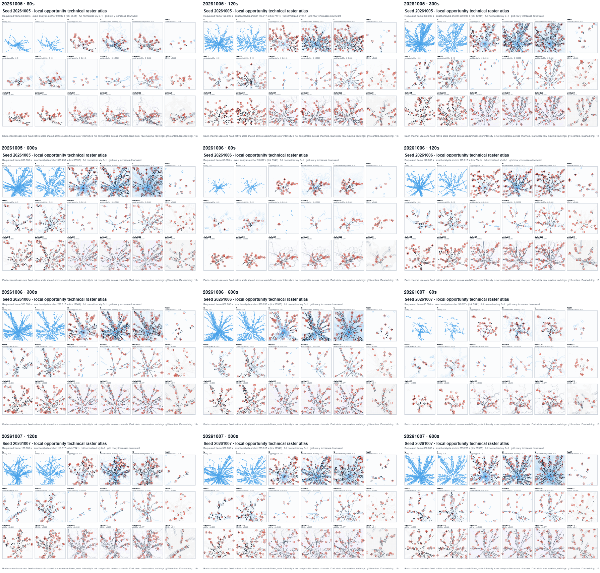
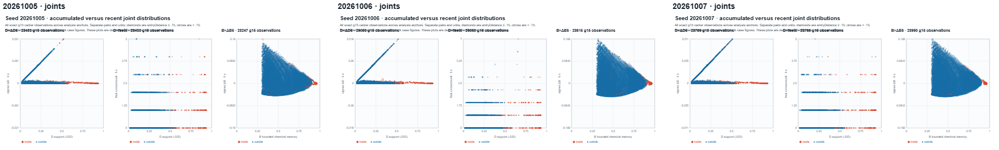

Fixed channel-specific scales are shared across seeds and times; exact signal anchor and requested frame times appear in each SVG. Color intensity is not comparable across channels. Grid covers normalized x/y 0–1 with y increasing downward.


Illustrative top three g15 centers per registered channel and boundary; associated X is shown separately from existing material. This does not rank channels together or establish causal association.
Case selection is machine-defined in analysis/cases.json. Traces distinguish exact-center samples from the moving X F-cell region. X node count reports cells, not area or force.